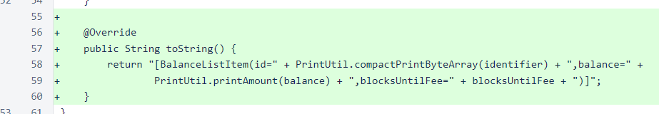
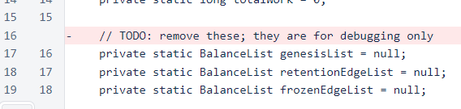
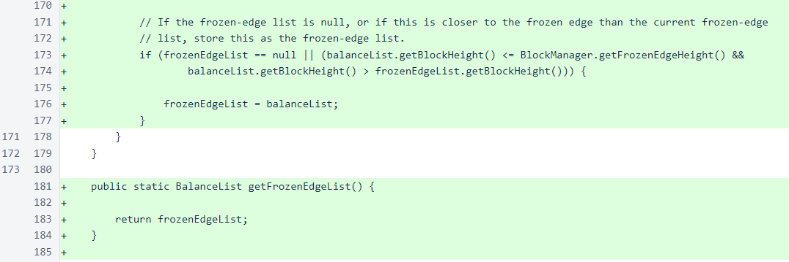
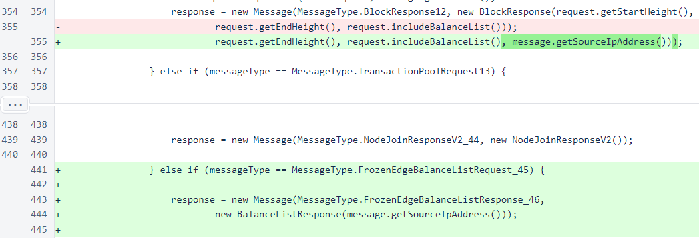
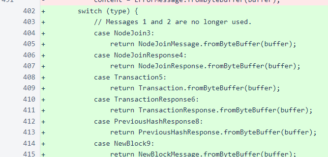
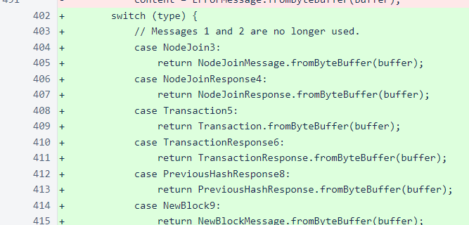
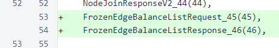
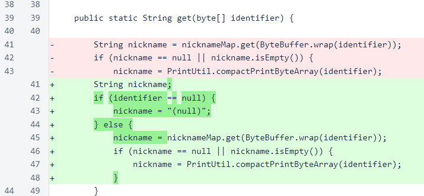
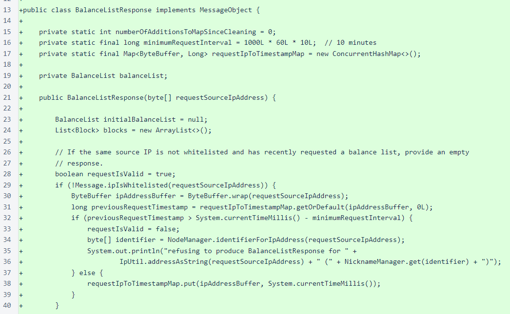
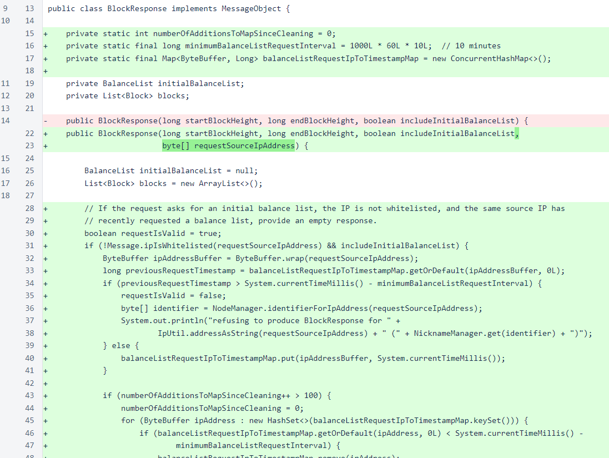

Nyzo version 517 (commit on GitHub) reduces the workload for servicing requests for balance lists. It also adds a new request and response for providing the balance list of the verifier's current frozen edge. This request and response will take the place of the initial balance list of block requests, and future versions of the verifier will no longer provide initial balance lists for such requests.
This version primarily affects the verifier. Some of the affected code paths are used by the sentinel, but the changes are insignificant to the operation of the sentinel.
To conserve memory, few balance lists are stored in BalanceListManager at any one time. While the BalanceListManager is able to calculate the balance list for any height between the retention edge and frozen edge on demand, such calculations can be computationally intensive. This version makes some small changes to provide immediate reductions in the computational load of verifiers. It also provides a new message that will be the basis of future, more substantial improvements in the handling of balance lists.
In BalanceListItem, an override of toString() was added. This was added while testing the new BalanceListResponse message.
In BalanceListManager, the TODO for removing the fields for Genesis, retention-edge, and frozen-edge balance lists has been eliminated. While these fields were initially added for testing only, they are now planned to take the place of balanceListMap in this class.
The frozenEdgeList field is now updated immediately when a new frozen-edge balance list is available, and an accessor for this field has been added.
In MeshListener, block responses are now provided with the requester's IP address. This allows the responses to limit how frequently a balance list is provided for each requesting IP. Also, the frozen-edge balance list response has been added.
In the Message class, processContent() has been changed from an if/else structure to a switch statement. Typically, the Nyzo codebase avoids any premature return statements in methods (uses of a return before the last line of the method), as they can cause readability issues. Also, switch statements are avoided, as the Nyzo code also avoids any uncommonly used language features, regardless of how old or well-understood such features may be. In general, the Nyzo code strives to use as few features as possible, as often as possible, in an attempt to produce a codebase that is as readable and as predictable as it can be. However, in this particular case, a switch statement and early return statements suit the job that needs to be done far better than the previous if/else structure.
 

In the MessageType enum, types for the frozen-edge balance list request and response have been added.
In NicknameManager.get(), a check for a null identifier has been added. This is not directly related to the changes in this version, but it was an issue that arose during testing.
The BalanceListResponse class wraps a BalanceList object and implements the MessageObject interface. Balance-list responses are provided to each IP no more than once every 10 minutes.
The BlockRequest class now also limits balance lists to no more than once every 10 minutes per requesting IP. In a later version, the option to retrieve initial balance lists with block requests will be eliminated entirely, which will move the computational burden of deriving the balance list at a desired height from the responding node to the requesting node.
